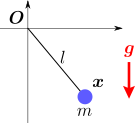
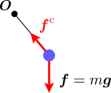
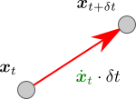
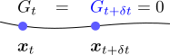
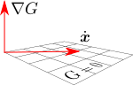
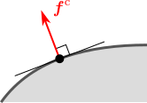
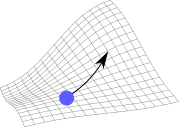
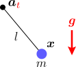

任意の時刻
𝑡
における振り子の位置
𝒙𝑡
を計算したい。
拘束力 𝒇𝑐 と、初期値 𝒙0,˙𝒙0 に対する拘束条件が知りたい

振り子のおもりの運動
𝒙𝑡
を計算するには、運動方程式：
𝑚¨𝒙=𝒇+𝒇c(1)
を具体的に書き下せばよい。
𝒇
は重力
𝑚𝒈
、
𝒇c
は振り子のひもからおもりが受ける拘束力（右図）。
拘束力 𝒇c が分かれば、運動方程式が決まる
そのためには、唯一の未知数である拘束力
𝒇c
を導出すればよい。そうすれば、運動方程式が確定し、第3章の3.1節で述べたように、初期位置
𝒙0
および初期速度
˙𝒙0
のもとで、
𝒙𝑡
が計算できる。
初期値 𝒙0,˙𝒙0 に対する条件も必要
ただし、初期値
𝒙0,˙𝒙0
は、（これまでのように）自由な値を取れるわけではない。実際、振り子の場合、拘束条件として、「原点からの距離がひもの長さ
𝑙
に一致する」（右図）：
𝐺(𝒙)≡|𝒙|−𝑙=0(2)
という条件がかかるので、おもりの初期位置
𝒙0
も、この拘束条件
𝐺(𝒙0)=0
を満たさなければならない。では、初期速度
˙𝒙0
についてはどうだろうか。式(2)には速度は含まれてい。しかし、だからといって
˙𝒙0
を自由にとれるわけではない。実際、ひもが伸びたり縮んだりしてはならないので、直感的に、速度
˙𝒙0
はひもと垂直になることが分かるだろう。この条件を理論的に導く方法を考えたい。以下の7.1.1節で議論するが、結論だけ言うと
˙𝐺=0
である。
この章の方針
よって、おもりの運動
𝒙𝑡
を実際に計算するために必要となるのは、「初期値
𝒙0,˙𝒙0
に対する拘束条件の導出」と「拘束力
𝒇c
の導出」である。この章では、これらを踏まえて以下の3つの節に分けて議論を行う：7.1初期値 𝒙0,˙𝒙0 に対する拘束条件7.2拘束力 𝒇c の導出7.3おもりの運動 𝒙𝑡 の計算7.4参考拘束が時間に依存する場合第9章の予告なお、拘束条件を表現する方法として、式(2)のように
𝐺=0
と表す以外に、極座標などの別の座標系を用いる方法も考えられる。それについては、第9章で扱う。
7.1初期値 𝒙0,˙𝒙0 に対する拘束条件
この節では、初期値
𝒙0,˙𝒙0
が満たすべき拘束条件(6)を導出する。
7.1.1初期値 𝒙0,˙𝒙0 に対する拘束条件：式(6)
拘束条件：
𝐺(𝒙)=0(3)
は、位置
𝒙
に対する条件である。
速度 ˙𝒙 に対する拘束条件が知りたい
一方、速度
˙𝒙
についても、冒頭でも述べたように、自由な値をとれるわけではなく、拘束がかかっている。よって、
˙𝒙
に対する拘束条件を書き下す必要がある。
𝛿𝑡 秒後の拘束条件(3)を考えればよい

もともと速度
˙𝒙
は、
𝛿𝑡
秒後の位置
𝒙𝑡+𝛿𝑡
の1次近似（右図）：
𝒙𝑡+𝛿𝑡≐𝒙𝑡+˙𝒙𝑡⋅𝛿𝑡
から出てきた量であった（第1章の1.1節）。よって、「
𝛿𝑡
秒後の位置
𝒙𝑡+𝛿𝑡
でも拘束条件(3)が破れないこと」を要求すれば、それは
˙𝒙
に対する拘束条件にもなっているはずである。
拘束条件(3)の時間微分を計算すればよい
拘束条件
𝐺(𝒙)
は、位置
𝒙
の関数である。しかし、おもりの位置
𝒙𝑡
は時間
𝑡
の関数であるため、
𝐺(𝒙𝑡)
は、
𝒙𝑡
経由で、
𝑡
に依存しているとも見なせる。これを
𝐺𝑡
で表すことにする：
𝐺𝑡≡𝐺(𝒙𝑡)
。

すると拘束条件は、時刻
𝑡+𝛿𝑡
においても成り立たなければならないので、
𝐺𝑡=𝐺𝑡+𝛿𝑡=0
となる（右図）。
𝐺𝑡+𝛿𝑡=0
については、1次近似により
0=𝐺𝑡+𝛿𝑡≐𝐺𝑡+˙𝐺𝑡⋅𝛿𝑡
と書ける。よって
˙𝐺𝑡=0(4)
となる。これが、速度
˙𝒙
に対する拘束条件になっているはずである。
速度 ˙𝒙 に対する拘束条件：式(5)
式(4)の左辺の微分を計算すると、微分の連鎖律（第5章の【5.1-注3】において
𝒙′
を
𝑡
としたもの）により、
˙𝒙
を括り出すことができる：
˙𝐺≡𝑑𝐺𝑑𝒙𝑑𝒙𝑑𝑡≡(∇𝐺)T˙𝒙=0(5)
これは確かに速度
˙𝒙
に対する拘束条件になっている。

∇𝐺
は拘束面に垂直なベクトル（右図）なので、この式(5)は、
˙𝒙
が拘束面上にあることを意味しておりもっともらしい（振り子の場合は
˙𝒙
がひもと直交していることを意味している）。なお、第4章の4.2節でも述べたように、
∇𝐺≠𝟎
となるように
𝐺
をとっているものとする。
初期値 𝒙0,˙𝒙0 に対する拘束条件：式(6)
以上をまとめると、
𝒙,˙𝒙
は以下の拘束条件を満たさなければならない：
𝐺=0˙𝐺≡(∇𝐺)T˙𝒙=0}(6)
従って、初期値
𝒙0,˙𝒙0
もこの式を満たすようにとっておく必要がある。もう一度微分した
¨𝐺=0
も新しい条件を与えそうな気がするが、次節ですぐ見るように、これには加速度が含まれ、初期値ではなく拘束力
𝒇c
に対する条件になる。
7.2拘束力 𝒇c の導出
この節では、拘束力
𝒇c
の具体的な式(9)を導く。拘束力が決まることで、最終的な運動方程式(13)が得られる。
7.2.1拘束力 𝒇c を決定する式：拘束条件(7)とダランベールの原理(8)
拘束力
𝒇c
を導出したい。
𝒇c
はもちろん拘束条件(3)に依存する。また、拘束力以外の外力
𝒇
にも依存する。例えば、おもりを引っ張るような外力
𝒇
を与えれば、それに抵抗するように拘束力
𝒇c
が働く。
拘束条件(7)が拘束力 𝒇c に課す条件：式(7)
拘束条件(7)が拘束力
𝒇c
に課す条件を導こう。まず、初期値
𝒙0,˙𝒙0
が、式(6)：
𝐺=˙𝐺=0
を満たしている時、その後も拘束条件
𝐺=0
を満たし続けるためには、任意の時刻で
¨𝐺=0(7)
が成り立てばよい。分かりにくければ次のアナロジーを考えるとよい：初期位置・初期速度
𝑥0,˙𝑥0
が
0
で、それ以降の加速度
¨𝑥
も
0
であれば、位置
𝑥
は
0
のままである。
𝑥
を
𝐺
に置き換えればよい。
条件が足りない
式(7)は、式(6)の第2式をもう一度微分したものであり、加速度
¨𝒙
を含む条件式になっている。その式に、運動方程式
𝑚¨𝒙=𝒇+𝒇c
を代入して
¨𝒙
を消去すれば、拘束力
𝒇c
に対する条件が得られる。しかし、
𝒇c
はベクトルなので、式(7)の1条件だけでは完全には決まらない。しかも、式(7)さえ満たしていれば拘束条件は満たされるのだから、拘束条件からはこれ以上の条件は出ない。よって、
𝒇c
を決めるためには、物理的な条件を加える必要がある。
ダランベールの原理(8)を課せばよい

その条件は既に分かっている。即ち、第4章の4.1節で述べたダランベールの原理：拘束力
𝒇c
は拘束面に垂直になるである（右図）。これにより、
𝒇c
と
∇𝐺
は平行となるので、未知係数
𝜆
を用いて、
𝒇c
は以下のように書ける：
𝒇c=𝜆∇𝐺(8)
この式は、振り子の場合には、
𝒇𝑐
がひもと平行になることを意味しており、もっともらしい。
式(7), (8)から拘束力 𝒇c が決まる
以上で、必要な条件が出そろった。ダランベールの原理(8)の未知数は
𝜆
だけなので、拘束条件(7)（と運動方程式）を用いることで、
𝜆
が求まり
𝒇c
が決まる。
7.2.2拘束力 𝒇c を与える公式：式(9)
実際に、拘束条件(7)とダランベールの原理(8)から、拘束力
𝒇c
を求めると、以下の【7.2-注1】の式(9)のようになる。この結果は、一般的な拘束条件においても成り立つ（振り子に特有の性質は使っていない）。
【7.2-注1】拘束力 𝒇c の公式(9)
拘束条件
𝐺(𝒙)=0
が課されている時、拘束力
𝒇c
は以下のようになる：
𝒇c=𝜆∇𝐺𝜆≡−𝑚(𝑑𝑑𝑡∇𝐺)T˙𝒙+(∇𝐺)T𝒇|∇𝐺|2(9)
𝒇
は重力などの外力（＝拘束力以外の力）である。
導出
ダランベールの原理を適用した運動方程式：式(10)
まず、運動方程式(1)にダランベールの原理(8)を代入すると
𝑚¨𝒙=𝒇+𝜆∇𝐺(10)
となる。後は、この式が拘束条件の2階微分(7)を満たすように
𝜆
を決めればよい。
拘束条件から 𝜆 を決める
式(7)を実際に計算するには、式(6)の第2式：
˙𝐺≡(∇𝐺)T˙𝒙=0
をもう一度微分すればよい：
¨𝐺≡(𝑑𝑑𝑡∇𝐺)T˙𝒙+(∇𝐺)T¨𝒙=0(11)
以下の積の微分公式【7.2-注2】を、
˙𝐺≡(∇𝐺)T˙𝒙
に適用した。式(12)で
𝐴=(∇𝐺)T,𝐵=˙𝒙
とすればよい。式(10)の
¨𝒙
を式(11)に代入すれば、
𝜆
に対する方程式になる。これを解くと、式(9)の
𝜆
に一致する。
◼
【7.2-注2】積の微分公式
時刻
𝑡
に依存する2つの行列
𝐴𝑡,𝐵𝑡
に対し、それらの積
𝐴𝐵
の微分は、以下のようになる：
𝑑𝑑𝑡𝐴𝐵=˙𝐴𝐵+𝐴˙𝐵(12)
導出
求める微分は、
𝛿(𝐴𝐵)
を1次近似した時の
𝛿𝑡
の係数（以下の赤字部分）である：（時刻を省略した右辺の項は
𝑡
での値）
𝛿(𝐴𝐵)≡𝐴𝑡+𝛿𝑡𝐵𝑡+𝛿𝑡−𝐴𝑡𝐵𝑡∣
∣
∣
∣𝐴𝑡+𝛿𝑡≐𝐴+˙𝐴⋅𝛿𝑡𝐵𝑡+𝛿𝑡≐𝐵+˙𝐵⋅𝛿𝑡≐(𝐴+˙𝐴𝛿𝑡)(𝐵+˙𝐵𝛿𝑡)−𝐴𝐵≐(˙𝐴𝐵+𝐴˙𝐵)𝛿𝑡◼
7.2.3最終的な運動方程式：式(13)
拘束力
𝒇c
（式(9)）が求まったので、運動方程式
𝑚¨𝒙=𝒇+𝒇c
も確定する。具体的に書き下すと、外力
𝒇
を含む部分・含まない部分に分けて、以下のようになる：
𝑚¨𝒙=[1−ˆ∇𝐺(ˆ∇𝐺)T]𝒇−𝑚(𝑑𝑑𝑡∇𝐺)T˙𝒙|∇𝐺|ˆ∇𝐺(13)
記号
ˆ∇
ˆ∇𝐺≡∇𝐺|∇𝐺|
運動方程式の解釈運動方程式(13)の右辺「第1項」は拘束面に平行な方向（＝運動可能な方向）を向き、同「第2項」は垂直な方向を向いている。それでも分かりやすいとは言えないが、以下の【7.2-注3】のように、幾何学的に解釈しやすい形に変形できる。
【7.2-注3】運動方程式(13)の別表現
運動方程式(13)を、解釈しやすいように1次近似の形で（差分方程式として）書くと、以下のようになる：
˙𝒙𝑡+𝛿𝑡≐𝑃𝑡+𝛿𝑡(˙𝒙+𝑚−1𝒇⋅𝛿𝑡)𝑃≡1−ˆ∇𝐺(ˆ∇𝐺)T(14)
ただし、時刻
𝑡+𝛿𝑡
を明記しているもの以外は、時刻
𝑡
での値である。
𝑃
は、拘束面（の接平面）への直交射影行列になっている。
運動方程式(14)の解釈
この式の意味を考えてみよう。
𝑚−1𝒇
は、拘束が存在しない場合の加速度に等しい。従って、右辺の
(⋯)
部分は、拘束がない場合の「時刻
𝑡+𝛿𝑡
での速度」である。これに直交射影
𝑃𝑡+𝛿𝑡
がかかっているので、「その速度」を、拘束面へ直交射影したものが、実際の速度
˙𝒙𝑡+𝛿𝑡
になるわけである。拘束条件
𝐺
は、この
𝑃
の部分にのみ影響を与える。
導出
1運動方程式を、
𝑃
を使って表す
まず、運動方程式(13)が、拘束面への直交射影行列
𝑃
を用いて
𝑚¨𝒙=𝑃𝒇+˙𝑃𝑚˙𝒙(15)
と書けることを示す。そのためには、自明な式
˙𝒙=𝑃˙𝒙
（式(6)の第2式より明らか）の両辺を微分した後、運動方程式を使えばよい：
¨𝒙=𝑑𝑑𝑡(𝑃˙𝒙)=˙𝑃˙𝒙+𝑃¨𝒙∣運動方程式：𝑚¨𝒙=𝒇+𝒇c=˙𝑃˙𝒙+𝑃𝒇+𝒇c𝑚∣
∣
∣
∣ダランベールの原理より、𝒇cは拘束面に垂直：𝑃𝒇c=𝟎=˙𝑃˙𝒙+𝑃𝒇𝑚
21次近似を代入
後は、1次近似の定義式
˙𝒙𝑡+𝛿𝑡≐˙𝒙+¨𝒙⋅𝛿𝑡𝑃𝑡+𝛿𝑡≐𝑃+˙𝑃⋅𝛿𝑡
を式(14)に代入すれば、式(15)と1次近似の範囲で確かに等しくなることが分かる。
◼
7.3おもりの運動 𝒙𝑡 の計算
以上で、必要な議論がそろった。この節では、拘束条件
𝐺(𝒙)=0
が課されたおもりの運動
𝒙𝑡
の計算方法についてまとめた後、具体的な例として、冒頭で述べた「振り子の運動」と「ゆがんだ床の上を滑る運動」を扱う。
7.3.1おもりの運動 𝒙𝑡 の計算手順
拘束条件
𝐺(𝒙)=0
によって拘束された物体の運動
𝒙𝑡
を計算するには、以下の手順を踏めばよい：
1初期条件を設定
時刻
𝑡=0
における初期値
𝒙0,˙𝒙0
を、拘束条件(6)が成り立つようにとる。
2運動方程式を解く
その後の時刻
𝑡
での位置
𝒙𝑡
は、運動方程式(13)から計算できる。ただし、外力
𝒇
は既知であるとする。運動方程式の解き方は、第3章の3.1節で述べた。
7.3.2例題1振り子の運動
振り子の運動を計算する（右図）。拘束条件
𝐺
およびその微分は以下のようになる：
𝐺≡|𝒙|−𝑙∇𝐺=ˆ𝒙=𝒙𝑙𝑑𝑑𝑡∇𝐺=𝑑𝑑𝑡𝒙𝑙=˙𝒙𝑙⎫{
{
{⎬{
{
{⎭(16)
∇𝐺=ˆ𝒙
の導出は、第4章の【4.3-注1】で行った。
初期条件(17)、運動方程式(18)
これらを用いると、初期値
𝒙0,˙𝒙0
に対する拘束条件(6)は
|𝒙0|=𝑙𝒙T0˙𝒙0=0}(17)
となる。運動方程式を得るには、公式(13)に、式(16)と重力
𝒇=𝑚𝒈
を代入すればよい：
𝑚¨𝒙=(1−𝒙𝒙T𝑙2)𝑚𝒈−𝑚|˙𝒙|2𝑙2𝒙(18)
質量
𝑚
に依存しない式(18)を見ると、全ての項に質量
𝑚
が現れているので、
𝑚
を消去できる（運動方程式っぽく見せるために上式では
𝑚
を残している）。よって、振り子の運動は、初期値さえ同じであれば、
𝑚
によらず同じになる。第9章の予告第9章の9.2.2節で、運動方程式(18)を極座標で書き直す。
シミュレーション
実際に数値計算を行うと、右図のようになる。2次元, 3次元ともに同じ運動方程式(18)である。
7.3.3例題2 𝑧=𝑓(𝑥,𝑦) のグラフ上の運動

次に、もう1つの例として、3次元空間内のグラフ
𝑧=𝑓(𝑥,𝑦)
で表される曲面上におもりを拘束する場合を考える。拘束条件は
𝐺≡𝑓(𝑥,𝑦)−𝑧=0
とすればよい。
拘束条件の微分
拘束条件
𝐺
の微分は以下のようになる：
∇𝐺=⎡⎢
⎢⎣𝜕𝑥𝑓𝜕𝑦𝑓−1⎤⎥
⎥⎦𝑑𝑑𝑡∇𝐺=𝑑(∇𝐺)𝑑𝒙˙𝒙=⎡⎢
⎢
⎢⎣𝜕2𝑥𝑓𝜕𝑦𝜕𝑥𝑓0𝜕𝑥𝜕𝑦𝑓𝜕2𝑦𝑓0000⎤⎥
⎥
⎥⎦⎡⎢
⎢⎣˙𝑥˙𝑦˙𝑧⎤⎥
⎥⎦
赤字部分はのベクトル値関数の連鎖律である（第5章の【5.1-注3】）。また、
𝜕𝑦𝜕𝑥𝑓
と
𝜕𝑥𝜕𝑦𝑓
は、偏微分の可換性（以下の【7.3-注1】）により等しくなるので、一方だけ計算すればよい。
初期条件と運動方程式
上式を、拘束条件(6)に代入すると、初期値
𝒙0,˙𝒙0
に対する条件が得られる。また、運動方程式も、式(13)から得られる。しかし、きれいな形になるわけでもないので、代入結果については割愛する。数値計算を行う場合、このような代入処理はプログラム内で行えばよいので、代入後の式を具体的に書き下しておく必要はない。
シミュレーション
適当な
𝑓
を決めて数値計算を行うと、右図のようになる。なお、重力が下向きに働いている。
【7.3-注1】偏微分は可換
偏微分は可換である。即ち、2階全微分可能な任意の多変数関数
𝑓(𝑥1,𝑥2,…)
について以下が成り立つ：
𝜕𝑖𝜕𝑗𝑓=𝜕𝑗𝜕𝑖𝑓
記号
𝜕𝑖
𝜕𝑖
は、
𝑥𝑖
による偏微分の略記である：
𝜕𝑖=𝜕𝜕𝑥𝑖
証明
第15章の15.1節で証明する。
7.4参考拘束が時間に依存する場合

ここでは、動く振り子の運動
𝒙𝑡
の計算方法を考える。これは、振り子の中心点
𝒂
が時間とともに動くようになったものである。拘束条件
𝐺
は
𝐺(𝑡,𝒙)≡|𝒙−𝒂𝑡|−𝑙=0
となり、時刻
𝑡
に依存することになる。
これまでと同じ考え方で良さそう
おもりの運動
𝒙𝑡
を計算するには、ここでも「初期値
𝒙0,˙𝒙0
に対する拘束条件」と「拘束力
𝒇c
」の2つが分かればよい。前節までの類推により、
𝒙0,˙𝒙0
は
𝐺=˙𝐺=0
を満たせばよく、
𝒇c
はダランベールの原理から導出できることが期待される。
7.4.1初期値 𝒙0,˙𝒙0 に対する拘束条件：式(19)
初期値
𝒙0,˙𝒙0
に対する拘束条件は、前章と同様、
𝑡=0
において
𝐺=˙𝐺=0
を満たすことである：
𝐺=0˙𝐺≡𝜕𝑡𝐺+(∇𝐺)T˙𝒙=0}(19)
導出第2式は、以下の【7.4-注1】から得られる。ただし、以下のようにおいている：
𝜕𝑡𝐺=𝜕𝐺𝜕𝑡,∇𝐺=(𝜕𝐺𝜕𝒙)T=⎡⎢
⎢⎣𝜕𝑥𝐺𝜕𝑦𝐺𝜕𝑧𝐺⎤⎥
⎥⎦
【7.4-注1】合成関数の微分公式
任意の
𝑡,𝒙
の関数
𝐺(𝑡,𝒙)
を考える。
𝒙
が
𝑡
に依存するならば、
𝐺(𝑡,𝒙𝑡)
は、
𝑡
に関する1変数関数とみなせる。これを
𝑡
で微分したものは、以下のようになる：
˙𝐺=𝑑𝑑𝑡𝐺(𝑡,𝒙𝑡)=𝜕𝐺𝜕𝑡+𝜕𝐺𝜕𝒙𝑑𝒙𝑑𝑡
導出
まず、
𝐺(𝑡,𝒙)
に対し、通常の全微分を考えると
𝛿𝐺≐𝜕𝐺𝜕𝑡𝛿𝑡+𝜕𝐺𝜕𝒙𝛿𝒙(20)
となる（第5章の【5.2-注1】）。さらに、
𝒙
が
𝑡
に依存するので、
𝒙
の全微分を考えることができる：
𝛿𝒙≐𝑑𝒙𝑑𝑡𝛿𝑡(21)
後は、式(20)に式(21)を代入して、
𝛿𝑡
を括り出せばよい：
𝛿𝐺≐(𝜕𝐺𝜕𝑡+𝜕𝐺𝜕𝒙𝑑𝒙𝑑𝑡)𝛿𝑡
微分
𝑑𝐺𝑑𝑡
は、
𝛿𝐺
を1次近似したときの
𝛿𝑡
の係数なので、
(⋯)
部分である。
◼
この導出は、第5章の5.2.2節で、壁の速度を求めた時のものと同じである。
7.4.2拘束力 𝒇c と運動方程式：それぞれ式(25)と式(24)
拘束力
𝒇c
の導出も、前章の議論をなぞればよい。
拘束力 𝒇c ：式(25)
即ち、拘束条件の2階微分：
¨𝐺=0(22)
とダランベールの原理：（
𝜆
は未知係数）
𝒇c=𝜆∇𝐺(23)
を連立して
𝜆
を求めれば、
𝒇c
が確定する。実際に解くと、以下の【7.4-注2】の式(25)のようになる。当然だが、
𝜕𝑡𝐺=0
の場合、時間依存しない場合の拘束力(9)に一致する。
運動方程式：式(24)
これにより、運動方程式
𝑚¨𝒙=𝒇+𝒇c
は以下のようになる：
𝑚¨𝒙=[1−ˆ∇𝐺(ˆ∇𝐺)T]𝒇−𝑚[𝑑𝑑𝑡𝜕𝑡𝐺+(𝑑𝑑𝑡∇𝐺)T˙𝒙]|∇𝐺|ˆ∇𝐺(24)
【7.4-注2】時間変化する拘束条件による拘束力：式(25)
時間に依存する拘束条件
𝐺(𝑡,𝒙)=0
が課されている時、拘束力
𝒇c
は以下のようになる：
𝒇c=𝜆∇𝐺𝜆≡−𝑚[𝑑𝑑𝑡𝜕𝑡𝐺+(𝑑𝑑𝑡∇𝐺)T˙𝒙]+(∇𝐺)T𝒇|∇𝐺|2(25)
𝒇
は重力などの外力（＝拘束力以外の力）である。
導出
拘束条件(22)の微分を実際に行うと、以下のようになる：（
(⋯)
部分は式(19)の第2式）
0=𝑑𝑑𝑡˙𝐺=𝑑𝑑𝑡(𝜕𝑡𝐺+(∇𝐺)T˙𝒙)=𝑑𝑑𝑡𝜕𝑡𝐺+(𝑑𝑑𝑡∇𝐺)T˙𝒙+(∇𝐺)T¨𝒙(26)
この式から
¨𝒙
を消去するために、運動方程式
𝑚¨𝒙=𝒇+𝒇c
にダランベールの原理(23)を代入したもの：
𝑚¨𝒙=𝒇+𝜆∇𝐺
を代入すれば、
𝜆
に対する方程式となる。これを解くと、
𝜆
が決まり、式(25)のものに一致する。
◼
7.4.3物体の運動 𝒙𝑡 の計算
時間に依存する拘束条件
𝐺(𝑡,𝒙)=0
によって拘束された物体の運動
𝒙𝑡
は、以下のように計算できる：前節の「時間変化しない拘束の場合」とは、使う式が異なるだけである。
1初期条件を設定
時刻
𝑡=0
における初期値
𝒙0,˙𝒙0
を、拘束条件(19)が成り立つようにとる。
2運動方程式を解く
その後の時刻
𝑡
での位置
𝒙𝑡
は、運動方程式(24)から計算できる。
7.4.4例題1動く振り子：初期条件(27)、運動方程式(28)
節の冒頭で述べた通り、中心点
𝒂
が動くような振り子（右図）の拘束条件は
𝐺(𝑡,𝒙)≡|𝒙−𝒂𝑡|−𝑙=0
である。以下では、式を見やすくするため
𝒚≡𝒙−𝒂𝑡
とおく。
拘束条件の微分
拘束条件
𝐺
の微分を計算すると、以下のようになる：（
𝜕𝑡
は
𝒂
のみに作用し、
𝑑𝑑𝑡
は
𝒙,𝒂
両方に作用することに注意）
𝜕𝑡𝐺=−ˆ𝒚T˙𝒂=−𝒚T˙𝒂𝑙𝑑𝑑𝑡𝜕𝑡𝐺=−˙𝒚T˙𝒂+𝒚T¨𝒂𝑙∇𝐺=ˆ𝒚=𝒚𝑙𝑑𝑑𝑡∇𝐺=˙𝒚𝑙
初期条件と運動方程式
初期値
𝒙0,˙𝒙0
に対する拘束条件は、上式を式(19)に代入すればよい：
|𝒚0|=𝑙𝒚T0˙𝒚0=0}(27)
ただし、
𝒚0=𝒙0−𝒂0
である。運動方程式は、「上で計算した拘束条件
𝐺
の微分」と「
𝒇=𝑚𝒈
」を式(24)に代入すれば得られる：
𝑚¨𝒙=(1−ˆ𝒚ˆ𝒚T)𝑚𝒈−𝑚|˙𝒚|2−𝒚T¨𝒂𝑙ˆ𝒚(28)
固定された振り子（7.3.2節）の場合と同様に、質量
𝑚
は削除できる。
シミュレーション
適当な
𝒂𝑡
を採用して数値計算を行うと、右図のようになる。
7.4.5例題2波打つ床
もう1つの例として、グラフ
𝑧=𝑓(𝑡,𝑥,𝑦)
で表される曲面上に、おもりを拘束する場合を考える（右図）。重力が下方向に働いているとする。拘束条件
𝐺
は
𝐺≡𝑓(𝑡,𝑥,𝑦)−𝑧=0
となる。
拘束条件の微分
拘束条件
𝐺
の微分は以下のようになる：
𝜕𝑡𝐺=𝜕𝑡𝑓,𝑑𝑑𝑡𝜕𝑡𝐺=(𝜕𝑡+˙𝑥𝜕𝑥+˙𝑦𝜕𝑦)𝜕𝑡𝑓∇𝐺=⎡⎢
⎢⎣𝜕𝑥𝑓𝜕𝑦𝑓−1⎤⎥
⎥⎦,𝑑𝑑𝑡∇𝐺=(𝜕𝑡+˙𝑥𝜕𝑥+˙𝑦𝜕𝑦)⎡⎢
⎢⎣𝜕𝑥𝑓𝜕𝑦𝑓0⎤⎥
⎥⎦
初期条件と運動方程式
初期値
𝒙0,˙𝒙0
に対する拘束条件は式(19)から決まり、運動方程式は式(24)から決まる。しかし、きれいな形になるわけでもないので、結果については省略する。
シミュレーション
3次元の場合に、適当な
𝑓(𝑡,𝑥,𝑦)
を採用して数値計算を行ってみると、右図のようになる。